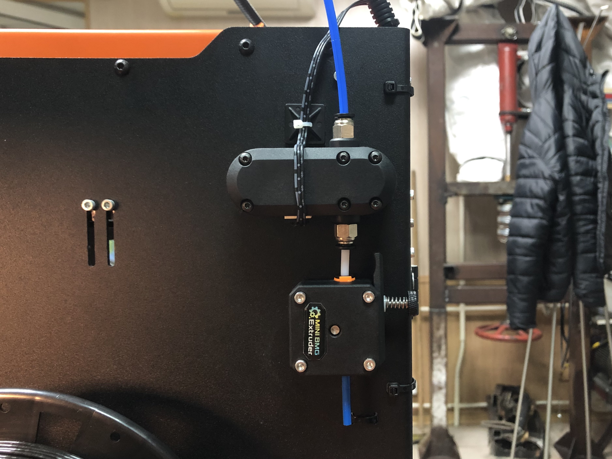
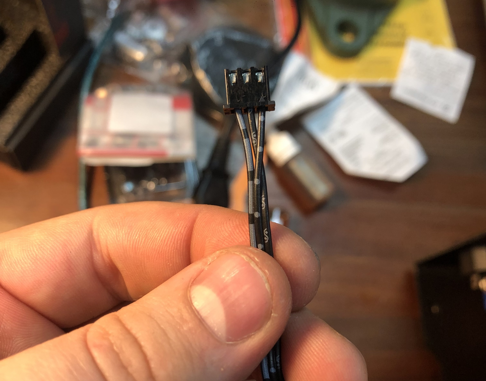
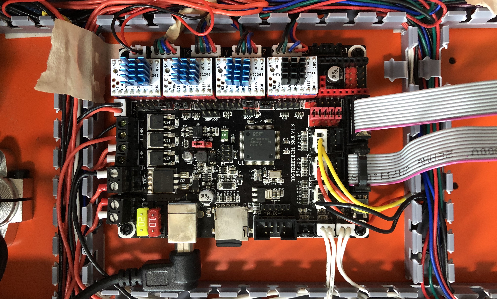

Programming, robotics, traveling
Привет. Уже давно, при печати больших изделий, начал испытвать потребность в датчике, который сигнализировал бы о том, что печать пластик закончился и нужно притормозить печать и сменить катушку. Такие датчики делятся на два вида: простой (кнопка которая нажимается прутком) и умный. В умном идёт детекция того, что пластик двигается. Это важный момент тк:

В этом году я наконец купил датчик филамента, и все никак не мог подключить его. Одной из причин этому было отсутствие информации как это сделать.
И хотя одним из первых ответов в поисковике выдается статья на сайте makenprint.uk, из-за отвратительной рекламы пронизывающей сам текст, дизайна сайта и стиля повествования автора, статья вышла нечитаемой. Плюс, для многих русскоязычных, английский может стать барьером, поэтому я решил описать это всё у себя в блоге. А заодно проверить на практике.
Я купил датчик Smart Filament Sensor от компании Bigtreetech (BTT). Вместе с датчиком поставляется провод, которого мне хватило для прокладке в гофре от хотэнда. Также провод сразу обжат под разъём концевика в плате BTT SKR v1.3 полагаю такая же распиновка и плате SKR v1.4. Как раз такая плата установлена в моём принетере UltiSteel.

Учитываете распиновку на вашей плате, и при необходимости поменяйте местами пины на проводе от датчика. Для этого чем-то тонким зажмите ключ, что держит контакт в разъёме и вытащите его для замены.
На моей плате подключены концевики в разъёмы: X_MIN_PIN, Y_MIN_PIN, Z_MIN_PIN. А все положительные – свободны.

Я как и автор оригинальной статьи предлагаю использовать Z_MAX_PIN хотя на самом деле вы можете выбрать и любой другой. Главное указать это в настройках Marlin 2. Для этого необходимо найти файл конфигурации платы, например для SKR v1.3 это будет файл pins/pins_BIGTREE_SKR_V1.3.h. И в этой файле найти следующие строки.
X_MIN_PIN P1_29
X_MAX_PIN P1_28
Y_MIN_PIN P1_27
Y_MAX_PIN P1_26
Z_MIN_PIN P1_25
Z_MAX_PIN P1_24
Соотвествующее значение пина микроконтроллера к которому вы подключили датчик, прописать в этом же файле в секцию
ifndef FIL_RUNOUT_PIN
define FIL_RUNOUT_PIN P1_24 // Z_MAX_PIN
endif
После подключения разъёма и определения FIL_RUNOUT_PIN можно раскомментировать функцию использования датчика в прошивке. Для этого в файле Configuration.h раскомментируйте следующую секцию:
#define FILAMENT_RUNOUT_SENSOR
#if ENABLED(FILAMENT_RUNOUT_SENSOR)
#define FIL_RUNOUT_ENABLED_DEFAULT true
#define NUM_RUNOUT_SENSORS 1
#define FIL_RUNOUT_STATE LOW
#define FIL_RUNOUT_PULLUP
// #define FIL_RUNOUT_PULLDOWN
#define FILAMENT_RUNOUT_SCRIPT "M600"
// If you use non-smart sensor comment this
#define FILAMENT_RUNOUT_DISTANCE_MM 25
#ifdef FILAMENT_RUNOUT_DISTANCE_MM
// If you use non-smart sensor comment this
#define FILAMENT_MOTION_SENSOR
#endif
#endif
Настройки могут немного менять с разными версиями прошивки, поэтому я советую опираться на комменатарии и код именно в вашей версии прошивки.
Далее необходимо настроить алгоритм который будет отрабатывать срабатывание датчика. Для этого необходимо открыть файл Configuration_adv.h и раскомментировать секцию #define ADVANCED_PAUSE_FEATURE. Эта секция содержит большое количество настроек, поэтому советую оставить их стандартный набор и менять что-то после тестов по необходимости.
Собственно затем необходимо собрать прошивку и загрузить в МК.